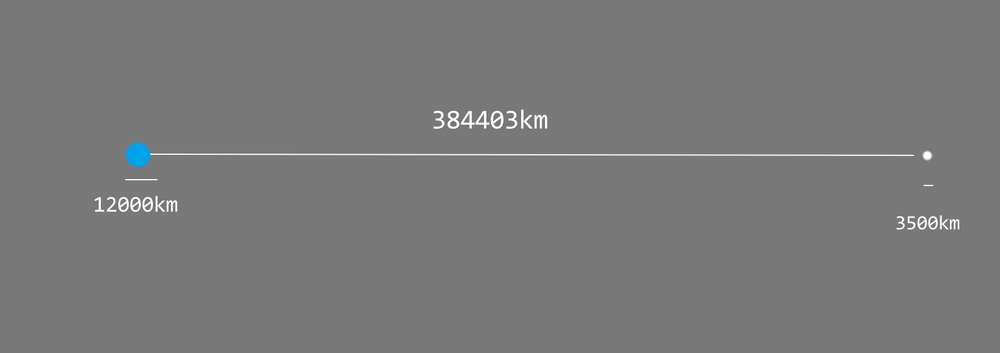
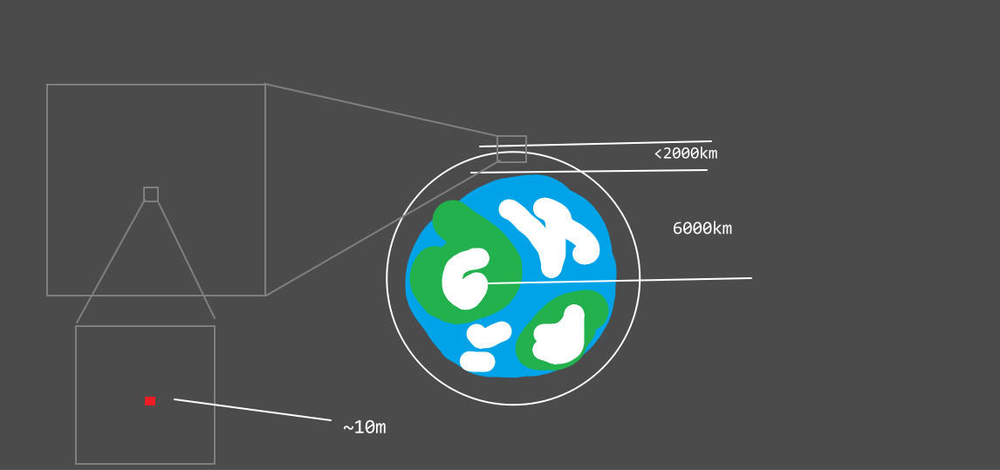

我整理出了一些地理学者都应该知道的天文常识，希望这些基础知识能早日普及天下。
人们往往认为地月系、太阳系中天体的的尺寸比例真如那些科普图上画出的一般：
人造卫星密密麻麻地堆叠着，威胁着要把地球困住；月球就贴在地球脸上，似乎发个火箭去月球比在地球上旅行还容易。但实际上，这样的想法大错特错。
当然，千言万语胜不过一张图。这是地月系的真实比例：

人造卫星往往在近地轨道运行，这是近地轨道：

假如地月系真如科普图所画的一般，那么月球在掀起滔天大洪水之后，很快就会被引力撕碎，一部分降落到地球上，形成大规模流星，与大气摩擦加热，不把人类砸死也会把人类热死。
人们同时也往往认为太阳系真如科普图所画的一般：

八个紧紧排在一起的行星绕着太阳的大火球转动。严格地说，这张图的日地大小比例还真差不离，但是请想一想，生活中我们见过这么大的太阳吗？从这张图上看，太阳应占据半个天穹才对。所以问题还是出在距离上。
太阳系的实际比例图实在不好画，但可以打比方。太阳直径 1.392×10⁶ 千米，地球直径 12000km，距离太阳 1.49597×10⁹ 千米。
我们把太阳缩减成直径一米的球体，那么地球就是直径 0.9 厘米的钢珠，距离太阳一百多米。想象一下从一百米开外看一个直径一米的瑜伽球，这才是从地球上看太阳的观感。
木星土星则稍大些，直径约 10 厘米，距离太阳分别是 500 米，1000 米。
再靠外一些，那就是直径三厘米的海王星，距离太阳三千米。三千米开外，还能分辨出太阳的形状吗？也许会和背后的星星混杂在一起吧。
有了上述关于尺寸的知识，我们可以对太空旅行重新建立认识。
要想进行太空旅行，首先得进入近地轨道。我们都知道近地轨道是近圆形的，而且紧紧套着地球。要达到这样一条轨道，火箭在大部分时间其实是在水平加速，而不是垂直上升。
天体的体积相对于它们之间的空间来说，是如此之小。要把探测器发送到月球，几乎像从百米开外一枪打中十环，稍有偏差，就会和月球失之交臂。要是想去火星，那几乎像是从大洲的一端向另一端射击。
探测器在近地轨道运行数十圈，每次只有距地球最近的很短一段距离在加速，加速的方向和时间都要精打细算，剩下的时间都在自由落体。通过这样的方式，不断把轨道的远点提高，打得足够精准，最终才能进入月球的引力范围。
尽管我们都知道地壳只有33km，而地球半径高达6000km，但往往图示上都把地壳画得太厚了，这也是没有办法的事。
同样地，地球的大气层相对来说也是极薄的，国际上定义大气层和外太空的分界线，也就是卡门线，高度仅为100km。
当然，这只是相对来说，要是与再入大气层的航天器和流星相比，地球的大气层又变得咄咄逼人了。为了维持轨道，航天器与地球的大气层会有较大的相对速度，而它当然不想先把这个相对速度减为零后再入，因为大气层的摩擦减速实在太省事了。流星则具有很大的随机性，往往和大气层的相对速度也很大。
再入大气层时，由于巨大的相对速度，摩擦生热，航天器的隔热大底所带的防热涂层会气化，被气流剥去，从而带走热量（物理大题常见）。到了流星上，被气化的则是它的岩层。与此同时，空气也被剧烈加热，形成等离子体拖尾。
惯性思维常常引导我们把各个系统想成二维的。对于地月系这当然没什么问题，毕竟只有两个坐标点。
但是对于太阳系就不能这么看了。如果我们还坚持黄道面是地球所在平面的定义，那么观察一个轨道不仅要看它的形状、大小，更要看它与黄道面的夹角。比如月球的轨道就与黄道面夹角 5.1 度，再考虑地月间那极长的距离，造成的位置偏移是不可忽略的。这也就是我们不会每月都看到日食的原因。
同样地，我们也不会每年都观察到其他行星的凌日（遮挡太阳），这也是因为它们各有不同的倾角。
再回想起刚才说的大小概念，可以发现行星间的遮挡在太阳系广袤的空间内几乎可以不用考虑，也能理解太阳放出的巨大能量真正到达地球的是多么小的一部分。
总之，我希望地理学习者们能建立以上的天文常识，至少下回想到太阳系的时候脑中不是一排桌球绕着一粒大火球，而是无垠的空间。